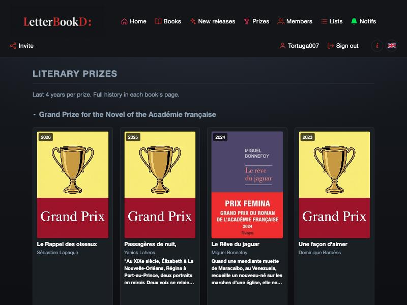

Literary prizes
Why it exists: Browse recent winners of the major French literary prizes. Useful for feeding the next book-of-the-month proposals and discovering award-winning reference books.

Walkthrough
Each prize has its own collapsible section that you open and close. Inside, the last four years are shown as cards: 'Grand Prix' (gold trophy) or 'Prix Femina' (cover of the winning book). Each card shows the year, title, author and a summary excerpt.
Click a card to land on the book page. A prize's full history is not on this page; it is reached through the page of its winners.
Action chains
Each row describes a trigger in the UI, the modal or form it opens, and the resulting effect.
| Trigger | Modal / Fields | Effect |
|---|---|---|
| Chevron (▸ / ▾) next to a prize name | — | Expands or collapses the prize section. Only one prize can be expanded at a time (name='prizes-acc'). |
| Winner card | — | Opens the winning book's page, with chips for the prizes it won. |